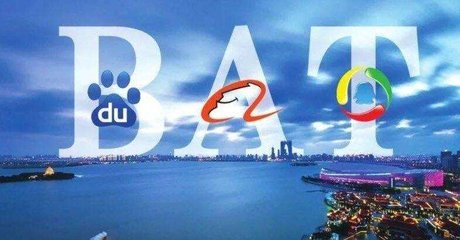
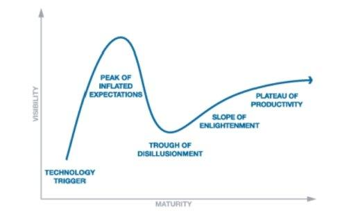

| 广告位 |
您现在的位置是：主页 > 洞察 >
不谋而合的“云计划”，但时代的主题已不再是
2019-11-20 14:32洞察 人已围观
简介 赶了个晚集，但最终没有缺席，在腾讯和阿里先后进行组织架构调整过后，近日，百度创始人、董事长李彦宏发表内...

赶了个晚集，但最终没有缺席，在腾讯和阿里先后进行组织架构调整过后，近日，百度创始人、董事长李彦宏发表内部信，宣布进行架构调整。
从内容上看，百度的此次组织架构调整主要包含两方面，一是智能云事业部（ACU）升级为智能云事业群组（ACG）， 二是搜索公司及各BG的运维、基础架构和集团级共享平台整合至基础技术体系（TG）。除此之外，李彦宏还喊出了“早日实现‘云上百度’的目标”这一口号。不难发现，“云”已然成为了百度这轮架构调整的核心词汇。而在此之前，“All in AI”是百度过去几年一直都深入人心的标签。
而在“云”方面，虽说百度云推出已经有些年头，但似乎是由于移动互联网的迷失造成了场景短板，似乎一直没能飞到云上，在规模和声音上不如阿里云和腾讯云。国际调研公司Forrester最新发布的《The Forrester Wave：2018年第三季度中国全栈公有云开发平台厂商评测》显示，腾讯云与阿里云、微软云、亚马逊云、华为云一起位居第一梯队，获评“领导者”(Leaders)，百度云只是第二梯队。
从目前来看百度的云服务似乎有些“欠费过多”的样子，不过以技术基因见长的百度倒也未必没有机会追赶AT。
腾讯方面在今年十月进行了自己的组织架构调整，成立了两个新的事业群：云与智慧产业事业群（CSIG）、平台与内容事业群（PCG）。马化腾在公开信中表明腾讯的目标是“为各行各业的传统企业、实体企业提供‘数字接口’。虽然人们的注意力更多地是放在产业互联网上，但“云”绝对是不容忽视的一环。
面对腾讯的高举高打，暂时国内领先的阿里自然不会无视这个国内最重要对手的举动。就在上个月，张勇宣布阿里开启新一轮组织架构升级，主要针对的是阿里云和零售事业群，再加上刚刚宣布调整的百度，至此，BAT的“云计划”都已经上升到了空前的高度。
巨头的默契从何而来？瓶颈、风险、价值
有一点可以确定的是，阿里和百度的组织架构调整绝对不是跟风腾讯。因为组织架构调整不是一件简单的事，这是关于一个企业长期发展的战略布局，与消费互联网时代直接进行代理人战争有着很大的不同，而且架构调整也不是说来就来，毕竟每个大企业内部都有复杂的利益关系。
由此我们可以认定此次BAT在“云”方面的布局不是互相跟风，而是有着前所未有的默契，而这份默契主要源自于以下两个方面：
忧患意识驱动：谨防路径依赖下的优势变劣势
企业的身后永远不乏替代者，尤其是在一个不确定的、巨变的商业环境当中，如何保持自我驱动下的可持续发展成为其中的关键。
尤其是对于BAT而言，移动互联网时代背景下，TMD的出现对于BAT而言其实就是教训，新科技和新环境很容易造就新的独角兽甚至巨头，所以现有BAT必须防患于未然，时刻保持危机意识。
从业务角度看，从PC互联网到移动互联网时代，BAT一直都是中国互联网的引领力量甚至主导力量，腾讯是一个社交+游戏公司，阿里是电商公司，百度是搜索+广告公司。它们的主营业务现在依旧可以为它们带来庞大的收入，但一系列“黑天鹅”的出现也让BAT光鲜的增长数据蒙上一层阴影。
先说腾讯，概括起来，腾讯的发展方式就是通过社交平台获得流量，通过游戏、广告的方式赚钱。但今日头条在短视频和信息流广告方面对腾讯的流量以及广告收入造成了一定的“挤出”，而且如今的今日头条气候已成，已经很难被“杀死”了。而游戏方面这项业务本身自带争议的基因，能带来高收入带也有许多来自政策和舆论的不确定因子，这在过去一年腾讯也有了深切的感受。
而阿里方面，近几年我们经常看到阿里“买买买”，到处布局跑马圈地，而且云计算业务本身已经是国内第一，但其主要收入依旧来自于电商。新零售的故事确实很美，技术驱动下的效率提升也的确是产业进步的方向，可效率只是零售的一个维度，阿里最大的焦虑其实还是流量，互联网的流量红利殆尽，新零售的理想国到底何时落地？新零售的红利有多大？这一点没有什么公式可以计算。行业也是狼多肉少，人口红利、消费红利的总量也是有限的，这也意味阿里急需寻找新的收入入口。
百度的焦虑其实显而易见，移动互联网时代，与主营业务稳定，没有太多内忧外患的阿里和腾讯相比，百度在移动互联网的战略迟疑造成了“百度掉队”的论调流传出来，也因此显得似乎更为焦虑。其主要业务概括起来其实还是“搜索+广告”，但移动互联网的场景被各个移动应用所割裂，百度在PC时代的适用场景严重受限。搜索引擎仅能扮演长尾流量的获取途径；单纯的搜索信息时代已经过去，到来从人找信息到信息找人的时代；而信息流方面还要面对腾讯、今日头条这样先发者的竞争，对新业务的布局也就成为理所应当的事。
任何企业的优势不可能长期存在，诺基亚们的例子也已经是屡见不鲜，可以说，过去一年BAT主营业务方面的瓶颈压力和竞争威胁，这是他们现在如此默契的动力引擎。优势很有可能成为企业发展的劣势，调整组价值架构，改善自身基因，对自己主营业务影响不大，但对于新业务而言开展扫清了内部环境。
外部技术环境巨变：“云价值”的奇点已至？
为什么现在开启“云计划”？企业的价值在于追求价值和创造价值，而巨头在云方面的默契也来自于它们对这一技术价值的预判，在互联网江湖（VIPIT1）团队看来这主要基于以下两个方面：
一方面，云技术已实现【价值理性】回归。
雷·库兹韦尔著作《奇点临近》序言中提到，传统IT正在走向资源化，即计算可以像水、电一样被资源化，这将是未来发展的一大趋势。而如今看来，这一趋势实现的第一步一定是云。
云服务主要划分为分布式计算和分布式存储，将计算、服务和应用作为一种公共设施提供给公众，被誉为数字商业时代的“水电煤”。从云服务本身来看，其价值到底有没有泡沫？答案是“有过”，任何新技术驱动下的产业往往具备估值高、营收低、风险高、周期长、不确定性高等特征，云服务同样也是如此，但云服务最大的泡沫其实早已破碎开来。
2005 年，Amazon宣布AmazonWebServices推出这也标志着云计算平台，而在2007 年前后，云计算成为IT 领域最令人关注的话题之一，是很多大型企业、互联网的IT 建设正在考虑和投入的重要领域。
2009 年1 月，阿里软件在江苏南京建立首个”电子商务云计算中心“，云服务开始在国内互联网企业中生根发芽。
而在随后的几年中，各种云服务品类繁多琳琅满目，几乎互联网企业、运营商，甚至与互联网沾边的都有云产品，而这其实才是云服务的泡沫期，到2014年以后，云的热度才逐渐归于理性。在全球范围内关于云服务开始逐渐归于理性，但潜移默化中，已经在越来越多的行业里生根发芽，再到现在，BAT以及国外的科技巨头们都开始进一步在云方面发力。
由此可见，云服务的发展其实也迎合了【加德纳技术成熟度曲线】。所谓的加德纳技术成熟度曲线，是指技术成熟经过5个阶段：1是萌芽期；2是过热期，可能出现泡沫；3是低谷期，又称幻想破灭期；4是复苏期，又称恢复期。人们开始反思问题，并从实际出发考虑技术的价值；5是成熟期，又称高原期。该技术已经成为一种平常。

不难看出，当前的云服务其实已经度过泡沫和低谷，来到了复苏期的阶段，云储存、云计算等整个云服务体系已经趋于成熟，价值理性实现回归，进行产业架构架构调整，掘金云服务市场的技术环境、市场环境已经成熟，这或许也是BAT架构调整如此默契的一个重要原因。
另一方面，云是发力产业互联网的“加速器”。
科技圈有这样一种说法：人们往往高估今后2年的形势，而低估未来10年的结果。
这句话如果放在十年前，未来十年说的就是云。如果放到现在，未来十年指的其实是产业互联网。所幸的是，如今的科技巨头都已经开始发力这个未来十年可能影响人类社会的领域。
产业互联网毫无疑问是当前的核心是ICT与OT技术的融合，其中云服务作为“先锋”的价值如今已经尽显无疑。
廉价的存储和充足的计算能力是阿里产业互联网崛起的关键驱动因素，通过提供的云存储、大数据和大计算功能，加速企业的数字化进程，让云服务充当连接设备和企业物联网的最大推动力。
以率先布局的阿里为例，阿里云的 ET 城市大脑和工业大脑也都被部署到了一些城市和工厂、机构中，覆盖的场景同样包括交通出行、医疗、金融、智能制造等，云的“加速”价值由此可见一斑。
而比阿里慢了几个身位的腾讯也看中了云的价值，再加上过去消费互联网时代，腾讯在游戏、视频、金融、零售、电商、交通等行业的192个场景中实现了业务布局，这为其云计划的推行奠定了场景融入基础。
百度方面，可能是BAT三巨头中较薄弱的一环，但其在人工智能领域的布局却是不可小觑的，毕竟处于战略进攻的百度要比战略防御位置的阿里和腾讯更舍得在新业务和新技术上下功夫，百度也可以通过AI技术和产品的提供来输出自己的百度云。
相反，很多在云方面底蕴略差或者根本没什么积累的科技公司，即便在消费互联网时代取得了巨大的成功，在产业互联网方面的进程似乎多少有些困难。
例如美团，以吃为中心的一站式服务电商，美团在消费互联网时代毫无疑问是成功的。但它的业务虽然够多，可最核心的还是商家资源，因此，在产业互联网的定位上更侧重于对商家的【赋能】。通过在收银、货物管理等方面的数字化来帮助商家提升经营的效率，这本身也是基于自身基因的布局，只是在自己业务能力范围内给予B端输出数字化服务，本身的格局就已经小了太多。而其它近段时间纷纷宣布发力产业互联网的企业很多斗与之类似。
由此可见，项庄舞剑意在沛公，云计划是开胃菜，产业互联网才是最大的蛋糕，阿里云、腾讯云、百度云其实是BAT各自试图打开产业互联网大门的钥匙。
BAT的默契是表，巨头对未来的共识性洞察才是真相。
移动互联网有TMD，但云时代或许有TMD“Plus”
在过去的印象里，从PC互联网到移动互联网，BAT几乎直接或间接主导了这期间所有互联网领域的兴起，一度也被人骂做是“狗日的BAT”。然，凡事皆有意外，TMD就是在BAT眼皮底下崛起的三家公司，今日头条正面直刚腾讯，美团挑战阿里，滴滴可能声量小些，或许与过去一年的波折不断有很大的关联，但这也不能否认它的成功。
那么云时代，会不会依旧是BAT主导？会不会有TMD这样的企业出现？在互联网江湖（VIPIT1）团队看来，BAT尤其是AT的地位依旧很高，但主导与否目前言之尚早，因为新的赛道可能孵化出比TMD体量和声量更大的企业。
国内云服务市场，大致可以分为互联网阵营和IT阵营，在过去，传统旳IT硬件厂商在转型期间都有研发云计算结果大多不理想。很多人把原因归咎于硬件基因方面的问题，也没有互联网公司的场景优势和数据优势，传统IT厂商的老大哥思科在进入公有云市场没两年就宣布退出就是如此。
事实上，有问题不只是IT厂商，BAT也有自己发展的难点。
从产业特征来看，在消费互联网时代，BAT以单点为突破口展开，然后再逐渐摸索相适应的商业模式即可，这一套模式屡试不爽，堪称“万金油”也一点不为过，但这一套逻辑放在企业级市场却行不通，因为无论是云服务更强调技术提供方对企业产业链条的深入了解，从数据库到大数据积累、运维，再到前端框架，不同行业甚至不同企业有着自己的个性化需求。
云服务实际上是通过云服务将传统产业的数据和系统进行升级，但任何一个产业都有自己根深蒂固的产业链，它实际上不是一个单独的问题，是一个产业整个生态系统的问题。为组织提供动力就是要从多个环节入手，这有这样，产业价值链才能实现升级的【链式效应】，这是“云计划”成功与否的关键，从金融到农业、从交通到医疗、从政府到媒体都受制于这一真理。
除此之外，软件并不是凭空发展起来的，它必须要运行在各种硬件基础上，一定是先有电脑和智能手机，才会有现在丰富的客户端和APP。软件的发展，离不开硬件的支持，而这或许是BAT的短板，也是IT系能够实现发展和崛起的机会。
全球权威咨询与服务机构Forrester正式发布《Now Tech: Public CloudDevelopment Platforms In China, Q2 2018》报告显示，除了阿里云和腾讯云以外，华为云和浪潮云也被纳入“大型厂商”阵营。除此之外，还有背靠小米的金山云等，这三家公司有很大几率上是存在成为云市场领域“TMD”的可能。
例如华为云，推出时间比较晚，但是发展速度确实显而易见的，过去只有硬件厂商标签的华为已经具备了浓厚的技术基因，内部资源上华为云似乎也享受到了不小的扶持；还比如浪潮的服务器销量全球前三，以硬件为依托输出自己的云服务不失为一种捷径；金山云的定位是基础云平台，走“垂直聚焦”的道路，也走出一条“小而美”的路子。
事实上，企业级市场不同于消费互联网时代，要求的不仅仅是“做到”，而且还要“做好”，这可能需要相关企业得具备制造业基因、供应链管理基因、技术基因等多种复杂的条件。无论是互联网系还是IT系，都有自己的优势也都有很大的不足，这也是为什么而截至到目前为止，没有一家公有云厂商能够通吃的原因，也因此，BAT放下姿态，与IT系牵手合作也越来越常见。无论是云还是产业互联网的未来其实都需要多方力量共同加速技术的迭代、标准制定、更多细分业务场景服务的开发。
新的赛道下，相对于消费互联网时代的TMD，这些IT厂商很大几率可能成为TMD“Plus版”，不过这会是BAT愿意看到的吗？让我们把答案交给时间。
【来源：钛媒体 作者： 刘志刚】
| 广告位 |